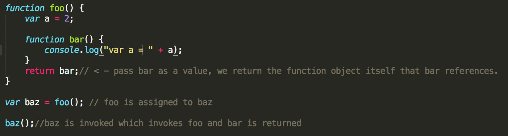
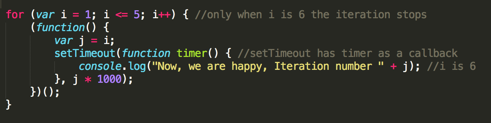
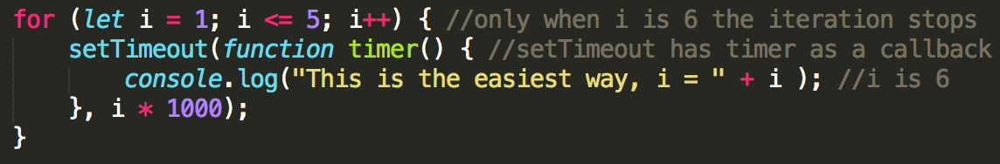

Closure is when functions are values and can be pass around at will. This apply to the different ways in which functions can be passed around as first-class values. That is the case for timers, event handlers, Ajax requests, crosswindow messaging, web workers, callbacks or as arguments. Closure is when a functions can remember it lexical scope even when it's invoked ourside its lexical scope. Consider the code below.
bar() has a lexical scope closure over of foo(), which keeps that scope alive for bar() to reference any time later. bar() still has a reference to that scope, and that reference is calles closure.
We know that JavaScript has function-based scope. The Principle of Least Privilege, also called Least Authority or Least Exposure, states that you should expose only what is minimally necessary and "hide" everything else. A proper design would hide private details making them not accessible to any outside influence and only controlled by the function.
Block scoping consist in declaring variables as close as possible to where they will be used. In reality you can consider it an extension of the Principle of Least Privilege. Other examples of block-scoping are with, let and const
Look at the code below. A simple for loop. Surprisingly the result is 6 printed five times. Let's analyze why. Of course what we really wanted is something different. In the code below only when the loop has ended then the callback function in the setTimeout can happen. By then the value of i is 6. What is really happening here is that i is only declared an initialize once, the loop runs on its own and then the setTimeout grabs the value of 6 from the latest iterarion and executes. All of this is because we need closure. We need to be able to declare and initialize i in each iteration so the next can get the value from the last and the setTimeout callback can run with the appropriate value. There is a couple of ways in which we can achive this.
We have learn in the Scope page that we can use IIFE to control the scope or to create scope, so in our case we can use it to create a new closure scope for each iteration. But that wouldn't be enough. We also need a variable referencing i for each new closure scope. See the code below
Remember from Scope that let behaves in a special way in the head of a loop. The variable will be declared not just once for the loop, but from each iteration. So a super easy solution to our original loop will look as below
